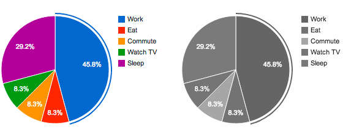
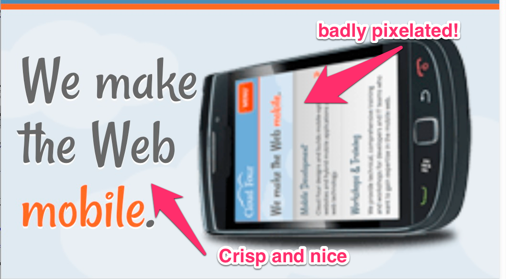

Rocky start
Use cases
Art Direction
Design breakpoints
@media all and (max-width: 16em) { … }
@media all and (max-width: 32em) { … }
@media all and (max-width: 41em) { … }
Matching media features and media types
Monochrome

Orientation
Relative units

API to manipulate sources
Image formats
Requirements
The solution MUST afford developers the ability to match image sources with particular media features and/or media types - and have the user agent update the source of an image as the media features and media types of the browser environment change dynamically.
The solution MUST degrade gracefully on legacy user agents by, for example, relying on HTML's built-in fallback mechanisms and legacy elements.
The solution MUST afford developers with the ability to include content that is accessible to assistive technologies.
The solution MUST NOT require server-side processing to work. However, if required, server-side adaptation can still occur through content negotiation or similar techniques (i.e., they are not mutually exclusive).
The solution MUST provide developers with a means to programmatically interface with image resources, as well as access relevant attributes and methods that make the solution practical to work with (i.e., it shouldn't require complicated Regex or nested loops to manipulate values). In addition, the solution MUST provide means to hook into relevant events (e.g., loading, errors, etc.). In any case, an API SHOULD provide a means to: Determine the current source of the image. Determine what environmental condition caused the current source to be selected (reflected as, for example, a CSS Media Query). Add, remove, and update image sources.
The solution MUST afford developers the ability to explicitly define different image versions as opposed to only different resolutions of the same image.
The solution MUST afford developers the ability to define the breakpoints for images as either minimum values (mobile first) or maximum values (desktop first) to match the media queries used in their design.
The solution MUST function in such a way that is responsive to environmental changes in relative units (e.g., when the user increases the base font size of the browser by pressing ctrl+ or ctrl-).
The solution MAY allow developers to specify images in different formats (or specify the format of a set of image sources).
To provide compatibility with legacy user agents, it SHOULD be possible for developers to polyfill the solution.